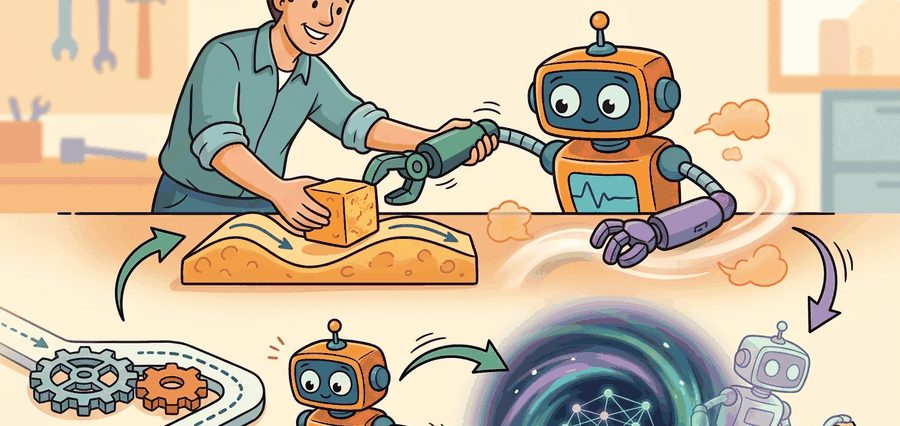
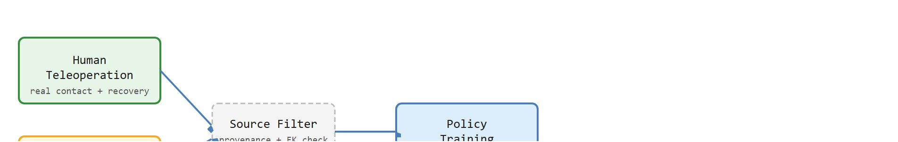

"The ceiling on imitation is not the algorithm; it is whoever held the controller, wrote the planner, or prompted the foundation model."
A Data Pipeline With High Standards

This section assumes familiarity with the imitation learning objective introduced in section 21.1 and with the covariate-shift problem covered in section 21.3. The three source types surveyed here are developed further in section 23.2 (human teleoperation hardware and operator protocols), section 23.6 (LeRobot dataset construction), and section 34.1 (vision-language-action models as foundation-model demonstrators). The source-mixing principles recur in Part VI alongside data-augmentation and dataset-curation strategies.
A surgeon guides a robot arm through a suture knot in under a minute. That single trajectory costs roughly forty dollars of operator time and captures something no planner can reproduce: the precise fingertip hesitation before thread tension breaks. Right now, embodied AI teams must decide how many such traces they can afford, where a motion planner can substitute for free, and whether a vision-language model can generate plausible rollouts for tasks that are too dangerous to rehearse physically. Getting this sourcing decision wrong caps policy performance before training even begins. Here you will learn the trade-offs among human teleoperation, planning-oracle data, and foundation-model proposals, and you will build the intuition for when to switch sources mid-project.
Two robots learn the same suture knot, one from a surgeon's forty-dollar trajectory and one from a million free planner rollouts, and the cheaper one fails every time the thread slips: the source of a demonstration, not its quantity, quietly fixes the ceiling on what the policy can ever learn. A demonstration here is a recorded trajectory of paired observations and actions that an imitation learning policy tries to reproduce, and the source is whoever or whatever generated that trajectory: a human at the controls, a motion planner, or a foundation model. Figure 21.5A orders the three sources by cost, from expensive human teleoperation at the top down to cheap foundation-model rollouts at the bottom, and the rest of this section explains when each tier is worth its price. The section defines the object of study, connects it to the agent loop, and tests it with a compact implementation.
The key question in Sources of demonstrations: humans, planners, foundation models is practical: what must the agent know, what can it observe, what action is available, and what evidence shows that the action worked under the stated conditions?
A representation earns its place when it changes the measurable action interface. In sources of demonstrations: humans, planners, foundation models, the reader should keep asking which decision becomes easier, safer, or more reliable.
Answering those four questions begins with the interface that exposes them, so the first design move is to make that interface legible. For Sources of demonstrations: humans, planners, foundation models, the practical design rule is to make the interface inspectable before optimization begins: inputs, outputs, units, latency, bounds, and failure labels should all be visible in the saved artifact.
The mechanism in Sources of demonstrations: humans, planners, foundation models is the contract between representation and action. Name what enters the module, what leaves it, which assumptions make that transformation valid, and which log would reveal a bad handoff.
To see why that interface contract matters, watch what a single source actually records when the demonstrator meets a surprise the planner never modeled. Keep one concrete rollout in view: an Aloha bimanual setup (a low-cost, dual-arm teleoperation rig where a human moves matching "leader" arms and the robot's "follower" arms mirror the motion) recording a human teleoperator threading a zip tie. The wrist cameras stream RGB at 30 Hz, and the leader-follower arms log joint angles at 50 Hz. The operator briefly pauses to re-seat the tie head before pulling tension. That pause becomes a sequence of small corrective actions that no MoveIt or OMPL planner would emit (MoveIt and OMPL are motion-planning libraries that compute collision-free arm trajectories from geometry alone, without observing contact), because the planner never models the tie slipping. That single trajectory enters a LeRobotDataset (the standard on-disk format for robot demonstration data used by the LeRobot library) tagged demo_source="human". A planner rollout of the same reach-and-place geometry enters tagged demo_source="planner" but lacks the recovery. The source decision helps only if it improves which of these the behavior-cloning policy can later reproduce on the real arm, especially once covariate shift drives the policy into states the demonstrator rarely visited.
from pathlib import Path
dataset_root = Path("robot_demos")
for episode in sorted(dataset_root.glob("episode_*")):
print("inspect", episode.name)
print("next step: convert demonstrations to the LeRobotDataset format")robot_demos folder and prints one line per episode directory, the first step before any episode is converted into the LeRobotDataset format used later in this section.Expected output: the printed trace for Sources of demonstrations: humans, planners, foundation models should expose the method configuration, the measured evidence field, and the failure label. If one of those fields is missing or unchanged under the perturbation, the example is not yet an evaluation artifact.
Start with a planner when the task geometry is known and simulation fidelity is high enough to transfer: this gives cheap, high-coverage bootstrapping. Switch to human teleoperation when the policy fails on contact-rich subtasks (grasping deformables, inserting into tight tolerances, recovering from slips), because planners systematically avoid those regimes. Add foundation-model proposals only after the task language and action space are stable, using them to widen semantic diversity rather than to replace hardware-grounded traces. The trigger for each switch is a diagnostic category: geometry failure points to planner gaps, contact failure points to human-trace shortage, and task-language generalization failure points to foundation-model augmentation.
Use LeRobot dataset metadata, ROS 2 bags, planner logs, and model-proposal records together, but preserve source ID, confidence, filtering rule, and approval status before merging data for policy training.
Demonstration source changes what the learner can trust. Human teleoperation captures real recovery habits and contact timing, but it also carries operator bias, latency, fatigue, and hardware-specific conventions. Planner demonstrations can be cheap and precise in simulation, but they may avoid perception errors and contact surprises. Foundation-model demonstrations can provide semantic breadth, but they need grounding checks before their action traces are treated as robot data.
So far: three sources (human teleoperation, motion planner, foundation model) each buy a different property, real recovery behavior, cheap precise coverage, or semantic breadth, and each carries a matching risk that the next paragraph quantifies.
Source provenance shapes policy failure modes more directly than total episode count: in one tabletop stacking study, a policy trained on 50,000 planner rollouts still failed on contact recovery, while 300 targeted human traces of the same slip event fixed it entirely. The source you are missing, not the volume you have accumulated, determines your policy's ceiling. Figure 21.5B diagrams how all three sources funnel through a single provenance filter before reaching policy training.

| Source | Strength | Risk To Record | Best Use |
|---|---|---|---|
| Human teleoperation | Real contact and recovery behavior | Operator latency, fatigue, style, and intervention rules | Hardware manipulation and dexterous skills |
| Motion planner | Precise coverage of known geometry | Unrealistic sensing, missing contact uncertainty, planner artifacts | Bootstrapping simulation and edge-case coverage |
| Foundation model | Semantic diversity and task-language coverage | Ungrounded actions, hallucinated affordances, embodiment mismatch | Proposal generation, annotation, and curriculum design |
A common assumption is that collecting more demonstrations from any available source will improve policy performance, treating human teleoperation, motion planners, and foundation models as interchangeable. That assumption is wrong in embodied AI. Each source encodes a different distribution of contact events, recovery behaviors, and physical constraints. Piling up planner rollouts cannot compensate for a shortage of human-recorded recovery grasps. Foundation-model proposals introduce embodiment mismatches that raw volume only amplifies. A policy's failure mode is determined by which source is absent, not by how many total episodes exist. Before adding more data from any single source, diagnose which failure category is binding: geometry coverage, contact-rich recovery, or semantic diversity.
Think of a cookbook assembled from three contributors: a culinary school recipe (precise measurements, ideal kitchen), a home cook's notes (improvised recoveries when the cream curdles or the dough tears), and a food blog post (broad flavor ideas, untested at altitude). A restaurant kitchen stocked only with culinary-school recipes executes flawlessly until something goes wrong, then has no recovery moves at all, because the home cook's hard-won fixes were never in the book. Adding a thousand more culinary-school recipes does not fill that gap. The character of the kitchen's failures tells you exactly which contributor is missing, not how thick the cookbook is.
Input: Task specification $\mathcal{T}$, candidate source set $\mathcal{S} = \{\text{human}, \text{planner}, \text{foundation model}\}$, budget constraints, target policy $\pi_\theta$
Output: Filtered, source-labeled demonstration dataset $\mathcal{D}$ for policy training
create_hdf5_filter_key; verify with h5ls -r dataset.hdf5 | grep mask.Trace the source-selection algorithm with a tiny tabletop stacking task. Budget: 60 episodes total. Failure taxonomy has two categories: geometry (reach wrong cell) and contact (block slips during grasp).
Step 2 (score sources). Using the 1-3 scale from the scorecard: human = hardware 3, coverage 2, audit 2 (total 7); planner = hardware 1, coverage 3, audit 3 (total 7); foundation model = hardware 1, coverage 3, audit 1 (total 5).
Step 3 (bootstrap planner). Geometry is known, so collect $N_{\text{plan}} = 40$ planner rollouts covering the 5x5 grid. Cost: near zero.
Step 4 (find contact failures, set human quota). Simulation rollouts show the contact category failing. With coverage weight $\alpha = 0.25$, the human quota is $N_{\text{contact}} = \lceil 0.25 \times 40 \rceil = 10$.
Step 5-6 (collect, filter). Record 10 human teleop slip-recovery traces. Generate 12 foundation-model proposals; the FK check on the URDF rejects 2 that command joint 4 to 3.4 rad (limit 3.05 rad), leaving 10 valid traces.
Step 7-8 (label, merge). Final dataset $\mathcal{D}$ has $40 + 10 + 10 = 60$ labeled episodes, exactly the budget. Behavior cloning trains on all 60.
Step 9 (evaluate, loop). Hardware eval: geometry success 0.88 (pass), contact success 0.42 (still above the 0.30 failure threshold). Return to step 4, raise $N_{\text{contact}}$ from 10 to 20, re-collect, retrain. The loop stops when contact failure drops below threshold, not when episode count hits a round number.
When mixing human and planner demonstrations in robomimic (an open-source framework that stores demonstrations as HDF5 files and provides baseline behavior-cloning trainers), set the hdf5_filter_key (the config field that names which subset, or "filter key", of episodes inside the HDF5 file a training run should read) parameter in your config to a custom key (for example, "human_only" or "mixed_balanced") that you write into the HDF5 file before training. Without this, robomimic defaults to the "train" filter key, which includes every episode regardless of source, silently defeating any source-balancing you applied upstream. Write your filter key immediately after merging episodes with robomimic.utils.file_utils.create_hdf5_filter_key, then verify with h5ls -r dataset.hdf5 | grep mask before launching a training run.
Consider a specific case. A team trains a pick-and-place policy using 200 human teleoperation episodes and 800 MoveIt planner rollouts in simulation. The planner traces cover 95% of the Cartesian workspace at near-zero cost, but every trajectory terminates cleanly without any slip or contact surprise. On the real robot, the policy succeeds on clear-table placements (80%) but fails when an object shifts during the grasp (12% success). The human traces, though fewer, contained 47 recovery grasps. Adding just 100 more human recovery episodes raises real-robot success to 61%, while doubling the planner rollouts to 1,600 moves nothing measurable. The diagnosis: planner data covered geometry but not contact dynamics. Source diversity, not raw volume, was the binding constraint.
Code Fragment 21.5.2 turns those distinctions into a provenance scorecard. The goal is not to rank sources universally, but to decide which source is credible for the evaluation question at hand.
# Score demonstration sources for a contact-rich tabletop task.
# Higher scores mean better match to hardware, coverage, and auditability.
sources = {
"human_teleop": {"hardware": 3, "coverage": 2, "audit": 2},
"planner_sim": {"hardware": 1, "coverage": 3, "audit": 3},
"foundation_model": {"hardware": 1, "coverage": 3, "audit": 1},
}
for source, scores in sources.items():
total = sum(scores.values())
print(source, total, scores)A vision-language-action model asked to "pick up the mug" may propose a wrist pose that is kinematically reachable in its training distribution but exceeds the joint limits of the target arm. The action trace looks semantically correct in the log but produces a joint-limit fault on the real hardware. This failure typically stays invisible in offline metrics, since the model output is syntactically valid; in practice it tends to surface only during hardware rollout, which is why the check below is applied before rollout rather than relied on to catch the problem after. Always filter foundation-model proposals through a forward kinematics check against the specific robot's URDF before adding them to the training set.
Why this matters physically: Joint limits exist because motors, tendons, and bearings have mechanical hard stops. Commanding a joint past its limit trips the safety controller, halts the entire arm mid-task, and can damage the drivetrain. A policy trained on out-of-limit demonstrations learns to issue those commands, so the fault recurs at test time even when the scene is easy.
How the FK filter works: The robot's URDF encodes each joint's minimum and maximum angle. A forward kinematics pass takes the proposed joint-angle vector $\mathbf{q}$ and checks $q_i \in [q_i^{\min}, q_i^{\max}]$ for every joint $i$ before the episode enters the training set. No physics simulation is required: it is a bounds check on the raw angle values, costing microseconds per trajectory step.
The Open X-Embodiment dataset (Google DeepMind, 2023) merges over one million real robot trajectories from 22 distinct embodiments and 34 research labs into one schema, the largest cross-source demonstration pool to date. Each episode carries provenance metadata (embodiment, control frequency, action space) so the RT-X policies trained on it can ablate which source contributed which skill, the exact provenance-first discipline this section argues for. The payoff was concrete: co-training across sources gave RT-1-X a roughly 50 percent average success improvement over single-embodiment policies.
For a serious robot-data release, include a data card with robot embodiment, camera placement, control frequency, action units, operator interface, reset policy, intervention policy, license, and split construction. LeRobot and robomimic can carry the data, but they cannot infer missing provenance after collection.
The common mistake in Sources of demonstrations: humans, planners, foundation models is to celebrate the component score before checking the closed-loop handoff. The failure usually appears at the boundary: stale state, wrong frame, delayed action, saturated actuator, or metric that ignores the real task cost.
A robot learning engineer applying sources of demonstrations: humans, planners, foundation models starts by recording the robot body, camera setup, action units, operator source, and split policy for every episode. That record makes it possible to compare LeRobot with a baseline without changing the task definition midstream.
For sources of demonstrations: humans, planners, foundation models, the useful test is simple: could a teammate point to the log line, plot, or trace that proves the idea changed the agent's next action?
Internet-scale demonstration sourcing via video. Recent work decodes manipulation actions directly from in-the-wild human video without robot-specific sensors. UniSim (Yang et al., 2024, Google DeepMind) trains a neural simulator from internet video and uses it to generate robot action proposals; follow-on work at CMU and Berkeley extracts 3D contact trajectories from monocular footage using video diffusion models. The open problem is verifying that extracted actions satisfy the target robot's kinematic limits and contact physics without running every proposal on hardware.
Foundation-model planners as scalable planner demonstrators. Vision-language models are replacing hand-coded motion planners as the planner source: given a scene image and a task description, a VLM decomposes the task and queries a motion primitive library to generate trajectories. RT-2 (Brohan et al., 2023, Google) showed this direction; RoboVLMs (Hejna et al., 2024) and ManipLLM (2024) extend it to multi-step contact manipulation. The unsolved challenge is grounding VLM-generated subgoal sequences in verifiable workspace constraints so that planner demonstrations do not silently violate physical feasibility.
Demonstration quality filtering and active sourcing. Rather than collecting uniformly from all sources, 2024-2025 systems learn which demonstrations are most informative before collecting them. GROOT (Nasiriany et al., 2024, NVIDIA) and RoboDreamer (2024) use learned difficulty models to request targeted human traces only where the current policy's uncertainty is highest. This flips the collection loop: the policy specifies what it needs rather than accepting whatever the operator provides.
Open problem for PhD students. All three sourcing strategies assume that the action space is fixed before collection begins. A student could investigate adaptive action-space discovery: a system that observes early human demonstrations, infers which action primitives (position, force, impedance) are actually exercised, and dynamically adjusts the robot controller and data schema before the main collection campaign. No current benchmark or public dataset evaluates this capability, making it both well-scoped and publishable.
Can you name the observation, state estimate, action, success metric, and most likely failure mode for sources of demonstrations: humans, planners, foundation models? If not, the system boundary is still too vague.
Demonstration sourcing pays off only under a closed-loop contract that names the observation stream, the state estimate, the action representation, the timing budget, and the evaluation artifact. Without it, a policy can look capable in a notebook and fail the first time a sensor drops a frame or a controller saturates.
For Sources of demonstrations: humans, planners, foundation models, separate the conceptual claim, the systems claim, and the evidence claim. A plausible mechanism, a clean interface, and a closed-loop result are different claims; the section should keep their evidence separate.
| Tool or Library | Role in Demonstration Sourcing | Embodiment-Specific Advice |
|---|---|---|
| Gymnasium | Planner-demonstration environments (FetchReach, FetchPush, HandManipulate) with dense state observations and scripted oracles | Use for cheap planner bootstrapping when the Franka Panda or Shadow Hand simulation is too slow for 10k rollouts. The built-in reset distribution is the workspace coverage guarantee; log it explicitly in the provenance card. |
| PettingZoo | Multi-agent teleoperation scenarios where two operators co-demonstrate on a shared table | Rarely the right fit for single-arm manipulation; prefer it only when the task requires two robots (dual-arm assembly, handover) and the demonstration records both agents' actions at matched 30 Hz control frequency. |
| ROS 2 | Recording human teleoperation as rosbag2 files and replaying planner rollouts on a physical Franka, UR5, or xArm | Set --max-bag-duration 60 and record joint states, end-effector wrench, and all camera topics in a single synchronized bag. A 10 ms clock drift between the arm topic and the wrist camera topic silently corrupts the action-observation alignment that behavior cloning depends on. |
| MuJoCo | Contact-physics simulation for generating planner rollouts at 500 Hz with realistic slip and deformation | Use mj_step at 500 Hz internally but subsample to 50 Hz for the saved action sequence; high-frequency internal steps capture contact transients while keeping the demonstration array at a size compatible with Franka's 50 Hz control loop. Verify that contact forces in simulation fall within the FT sensor range of the real wrist (typically 80 N / 10 Nm for Franka). |
| LeRobot | Unified storage and training for mixed human, planner, and foundation-model demonstrations across Koch v1.1, SO-100, and Franka embodiments | Store all three source types in a single LeRobotDataset with a demo_source metadata column set to "human", "planner", or "vlm". Use dataset.filter(lambda ep: ep["demo_source"] == "human") to ablate source contributions without re-collecting data. The Open X-Embodiment conversion scripts in lerobot/common/datasets/push_dataset_to_hub/ let you import RT-X episodes as a fourth source with a consistent interface. |
Before picking a tool from the table above, ask yourself: if the policy fails on hardware tomorrow, which column tells you whether to blame the data source or the model architecture? If you cannot answer that from your current dataset manifest, you are not yet ready to switch tools.
For Sources of demonstrations: humans, planners, foundation models, start with a small baseline that logs inputs, outputs, units, timestamps, and termination conditions before moving to Gymnasium or PettingZoo. The library run should keep the same artifact schema, so the comparison remains a same-task evaluation.
When Sources of demonstrations: humans, planners, foundation models fails, avoid labeling the whole method as weak. First assign the failure to perception, state estimation, planning, control, timing, data coverage, or evaluation. Then rerun one controlled perturbation that isolates the suspected cause. This pattern turns a disappointing rollout into a reusable diagnostic asset.
Sources of demonstrations: humans, planners, foundation models should be evaluated through four lenses: the learning objective, the robot interface, the data artifact, and the deployment failure mode. A demonstration is not a self-sufficient label; it is a trajectory sampled from an expert distribution that the learned policy will later disturb.
For demonstration sources, the workflow is source triage: compare human teleoperation, scripted planners, foundation-model proposals, and self-supervised corrections (episodes the deployed policy generates on its own, then relabels or filters using a success check, rather than a human or planner supplying the action) by coverage, bias, cost, safety, and action fidelity. This section's worked examples focus on the first three sources named in the title; self-supervised correction is a related fourth source, introduced here only so the checklist below is complete, and is covered in depth as DAgger-style aggregation in section 21.3.
A mixed-source demonstration set is a contract over provenance. Human traces, planner traces, and model-generated traces need separate labels because each source creates different biases and failure modes.
| Agent Lens | Question To Answer | Concrete Evidence |
|---|---|---|
| Curriculum and depth | What concept is new here, and why does Part V need it? | A definition, a worked example, and a failure case tied to the perception-action loop. |
| Code and tools | Which maintained tool removes boilerplate after the from-scratch baseline? | LeRobot, robomimic, DAgger, behavior cloning, dataset aggregation evaluated against the same task contract. |
| Data and evaluation | What distribution produced the behavior, and where can it break? | Train, validation, and stress splits with explicit robot, camera, timing, and license metadata. |
| Publication quality | Can the reader reproduce the claim without hidden context? | Captions, bibliography cards, cross-links, and a same-artifact audit trail. |
Do not claim that sources of demonstrations: humans, planners, foundation models improves robot learning unless the baseline and the proposed method share the same robot, task split, reset distribution, success metric, and random seed policy. Otherwise the comparison may be measuring dataset difficulty rather than method quality.
For Sources of demonstrations: humans, planners, foundation models, modern imitation systems should be audited as synchronized robot data: images, proprioception, language, actions, timing, operator metadata, and covariate-shift checks.
Who: A data curator combining teleoperation, motion-planner rollouts, and vision-language-action (VLA) model-generated proposals for a household robot.
Situation: The engineer needs to decide whether sources of demonstrations: humans, planners, foundation models is ready for a weekly policy comparison across 120 demonstrations and 30 held-out rollouts.
Decision: For Sources of demonstrations: humans, planners, foundation models, keep the minimal imitation baseline and compare LeRobot or robomimic only on the same manifest, split, seed policy, and rollout evaluator.
Result: The artifact is a source-balanced manifest with provenance, coverage, filtering decisions, rejected samples, and per-source rollout performance.
Lesson: Demonstration sources earn trust when provenance is visible enough to diagnose which source caused a policy behavior.
Before leaving this section, write one sentence that links sources of demonstrations: humans, planners, foundation models to each of these connected chapters: Chapter 14: Reinforcement Learning Refresher, Chapter 23: Teleoperation and Data Collection, Chapter 34: Vision-Language-Action Models. If any link feels forced, the section needs a sharper boundary or a clearer prerequisite recap.
Sources of demonstrations: humans, planners, foundation models is useful when it makes the perception-action loop more reliable, not when it merely adds a more impressive model name.
Design a method-matched experiment for Sources of demonstrations: humans, planners, foundation models. Specify the environment, observation schema, action interface, metric, and one perturbation that targets the section's core assumption.
Beginner (weekend): Source-labeled pick-and-place dataset in Gymnasium. Build a small demonstration dataset for FetchPush-v2 using Gymnasium's scripted oracle as the planner source and a random-perturbation wrapper to simulate operator-style noise; tag each episode with a demo_source field and verify the split using LeRobot's filter API. The key challenge is keeping observation timestamps, action units, and source labels consistent across two differently-paced data generators so that behavior cloning receives a coherent input.
Intermediate (1-2 weeks): Contact-failure diagnostic pipeline in MuJoCo. Train a behavior cloning policy on MuJoCo planner rollouts for a tabletop stacking task, measure its real failure categories (geometry miss vs. contact slip), then collect targeted human teleoperation episodes via a ROS2 joystick interface and retrain, logging per-source rollout success in a single robomimic HDF5 file with hdf5_filter_key splits. The key challenge is attributing failure to the correct source gap rather than total episode count, which requires a structured failure taxonomy recorded in the dataset manifest before retraining begins.
Goal: Measure directly how demonstration source, not episode count, sets a behavior-cloning policy's ceiling on a contact-sensitive task. Budget 20-30 minutes.
Tools: Python with gymnasium and gymnasium-robotics (the FetchPush-v2 environment), plus numpy and scikit-learn (an MLPRegressor is enough for the policy). No GPU required.
Procedure: (1) Generate 400 "planner" episodes using the environment's scripted oracle, which always pushes cleanly to the goal. (2) Generate 60 "human-like recovery" episodes by injecting a mid-trajectory perturbation (randomly shift the block, then let the oracle re-plan), tagging each episode with a demo_source field. (3) Train one policy on planner-only data and a second on planner-plus-recovery data, holding total training steps fixed. (4) Evaluate both on 50 rollouts where the block is perturbed during the push.
What to vary: the ratio of planner to recovery episodes (try 400:0, 400:30, 400:60), and the perturbation magnitude at eval time.
What to observe: Planner-only success collapses under perturbation while even 30 recovery episodes lift it sharply; meanwhile, simply doubling planner episodes to 800 barely moves the perturbed-eval number. You will see the section's central claim as a curve: the missing source, not the volume, is the binding constraint.
This section grounded sources of demonstrations: humans, planners, foundation models in an explicit robot-data contract: observations, actions, demonstrations, evaluation splits, and failure labels. The next reading step is Chapter 22: Action Chunking and Diffusion Policies, where the same contract is carried into the next technique or chapter.
This paper introduces DAgger, the standard fix for covariate shift in sequential imitation learning. Read it when behavior cloning fails after the policy visits states that the demonstrator rarely produced.
Pomerleau, D. (1989). ALVINN: An Autonomous Land Vehicle in a Neural Network. NeurIPS.
ALVINN is an early example of learning control from demonstrations and sensor inputs. It helps readers see that imitation learning's central distribution problem predates modern deep robot policies.
Mandlekar, A. et al. robomimic: A Framework for Robot Learning from Demonstration.
robomimic gives reusable datasets, baselines, and evaluation scripts for demonstration-based manipulation. It is the right tool when a section needs a reproducible behavior cloning or offline imitation baseline.
Hugging Face. LeRobot: Making AI for Robotics More Accessible.
LeRobot standardizes models, datasets, and training utilities for real-world robotics in PyTorch. It is especially useful for connecting small demonstration experiments to shared dataset formats on the Hugging Face Hub.
robomimic v0.1 Datasets Documentation.
The dataset documentation shows how demonstrations, task metadata, and evaluation splits are packaged for reproducible robot learning. Practitioners should read it before inventing a custom data layout.